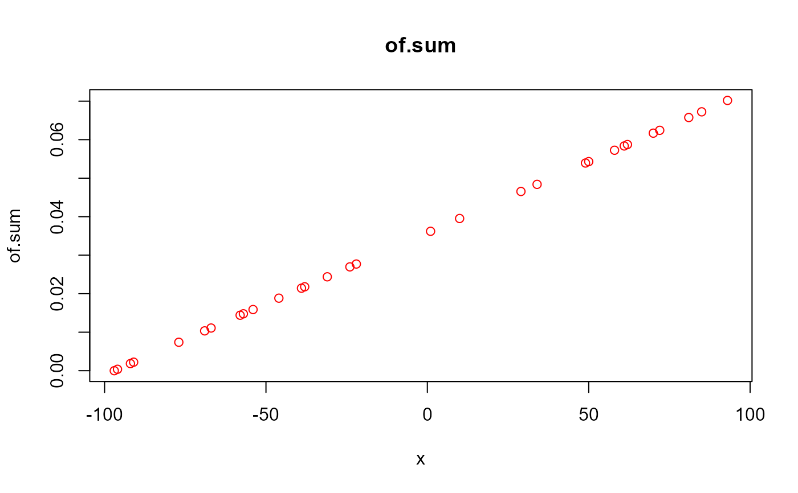
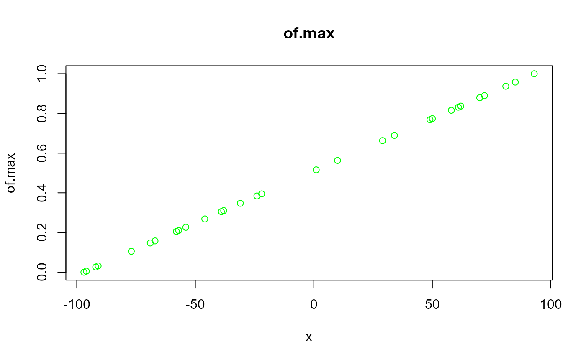
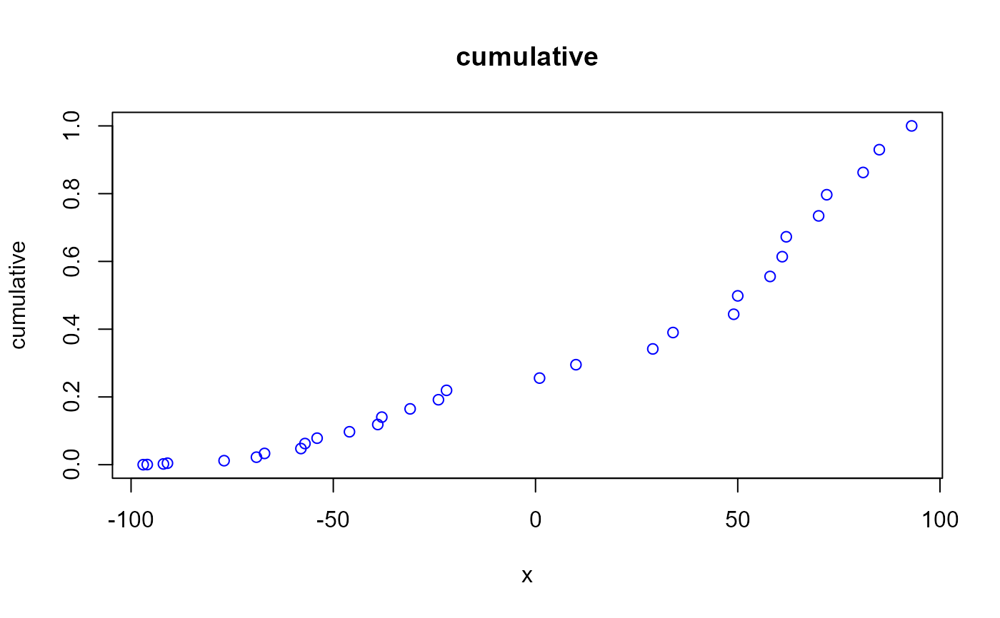
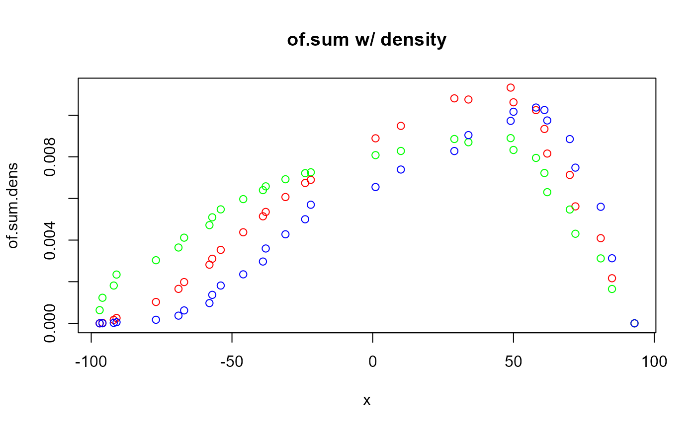

ratio calculates one of the following ratio types:
"of.sum" (relative to the sum of i)
"of.max" (relative to maximum value)
"cumulative" (cumulative total vs. total)
.
Using the related operator %ratio% assumes simple division by the total of i.
ratio(
i,
type = "of.sum",
as_density = FALSE,
sort.type = c("none", "value", "label", "num_label"),
...
)(vector) numeric vector
(string[]) One or more types of ratio methods to use (see Details): a vector of supported values is supported
(logical) TRUE returns x * p(1 - p), where p is a vector of cumulative proportions of x
(string,function) One of the following:
"none" to return along the original order (default)
"value" to sort by value
"label" to sort by name: all elements must be named
"num_label" to sort by numeral names: all elements must be named
dots_list: provided for backwards-compatibility as the function signature changes.
Sorting occurs before the input is further processed.
A numeric vector
Because this function produces values on a ratio scale, all values are internally shifted such that all values are >= 0.
Other Calculators:
calc.geo_mean(),
calc.harmonic_mean(),
calc.means(),
calc.rms(),
calc.zero_mean(),
odds2probs(),
radix(),
range_diff(),
ranking.algorithm()
(x <- sample(-100:100, 30))
#> [1] 72 50 -38 1 10 -54 58 -96 -77 -22 -24 29 -46 70 -39 -58 93 -57 -67
#> [20] -31 -97 61 62 85 34 -69 81 -92 49 -91
(d <- cbind(
x
, of.sum = ratio(x, of.sum)
, of.sum.dens = ratio(x, of.sum, as = TRUE)
, of.max = ratio(x, of.max)
, of.max.dens = ratio(x, of.max, as = TRUE)
, cumulative = ratio(x, cumulative)
, cumulative.dens = ratio(x, cumulative, as = TRUE)
))
#> x of.sum of.sum.dens of.max of.max.dens cumulative
#> [1,] 72 0.0624307351 5.618766e-03 0.889473684 0.0043041220 0.7968230513
#> [2,] 50 0.0543036572 1.061938e-02 0.773684211 0.0083296258 0.4983376431
#> [3,] -38 0.0217953454 5.351968e-03 0.310526316 0.0065820045 0.1403768009
#> [4,] 1 0.0362024381 8.889710e-03 0.515789474 0.0080817020 0.2556335427
#> [5,] 10 0.0395271518 9.486516e-03 0.563157895 0.0082820177 0.2951606945
#> [6,] -54 0.0158847433 3.529943e-03 0.226315789 0.0054754994 0.0783154784
#> [7,] 58 0.0572589583 1.024299e-02 0.815789474 0.0079473947 0.5555966014
#> [8,] -96 0.0003694126 2.298567e-05 0.005263158 0.0012290791 0.0003694126
#> [9,] -77 0.0073882527 1.026146e-03 0.105263158 0.0030320144 0.0118212043
#> [10,] -22 0.0277059475 6.895702e-03 0.394736842 0.0072574840 0.2194311045
#> [11,] -24 0.0269671223 6.741781e-03 0.384210526 0.0072135504 0.1917251570
#> [12,] 29 0.0465459919 1.080901e-02 0.663157895 0.0088564187 0.3417066864
#> [13,] -46 0.0188400443 4.375077e-03 0.268421053 0.0059679628 0.0971555227
#> [14,] 70 0.0616919099 7.128843e-03 0.878947368 0.0054684138 0.7343923162
#> [15,] -39 0.0214259328 5.142224e-03 0.305263158 0.0063993210 0.1185814555
#> [16,] -58 0.0144070927 2.817387e-03 0.205263158 0.0047180590 0.0476542298
#> [17,] 93 0.0701884004 0.000000e+00 1.000000000 0.0000000000 1.0000000000
#> [18,] -57 0.0147765054 3.103066e-03 0.210526316 0.0050932883 0.0624307351
#> [19,] -67 0.0110823790 1.982514e-03 0.157894737 0.0041162783 0.0332471371
#> [20,] -31 0.0243812338 6.068218e-03 0.347368421 0.0069217235 0.1647580347
#> [21,] -97 0.0000000000 0.000000e+00 0.000000000 0.0006331462 0.0000000000
#> [22,] 61 0.0583671962 9.338751e-03 0.831578947 0.0072213547 0.6139637976
#> [23,] 62 0.0587366088 8.157862e-03 0.836842105 0.0063016164 0.6727004064
#> [24,] 85 0.0672330994 2.166400e-03 0.957894737 0.0016501082 0.9298115996
#> [25,] 34 0.0483930550 1.075401e-02 0.689473684 0.0087010297 0.3900997414
#> [26,] -69 0.0103435537 1.654969e-03 0.147368421 0.0036430894 0.0221647580
#> [27,] 81 0.0657554488 4.091450e-03 0.936842105 0.0031200347 0.8625785002
#> [28,] -92 0.0018470632 1.662357e-04 0.026315789 0.0018155987 0.0022164758
#> [29,] 49 0.0539342446 1.132619e-02 0.768421053 0.0088979276 0.4440339860
#> [30,] -91 0.0022164758 2.561261e-04 0.031578947 0.0023434406 0.0044329516
#> cumulative.dens
#> [1,] 7.481501e-03
#> [2,] 1.016666e-02
#> [3,] 3.596081e-03
#> [4,] 6.548653e-03
#> [5,] 7.390165e-03
#> [6,] 1.815597e-03
#> [7,] 1.036877e-02
#> [8,] 2.397958e-06
#> [9,] 1.712827e-04
#> [10,] 5.697549e-03
#> [11,] 5.000385e-03
#> [12,] 8.278309e-03
#> [13,] 2.353725e-03
#> [14,] 8.853262e-03
#> [15,] 2.969015e-03
#> [16,] 9.722008e-04
#> [17,] 0.000000e+00
#> [18,] 1.367735e-03
#> [19,] 6.204717e-04
#> [20,] 4.277958e-03
#> [21,] 0.000000e+00
#> [22,] 1.024819e-02
#> [23,] 9.747058e-03
#> [24,] 3.125610e-03
#> [25,] 9.043728e-03
#> [26,] 3.699707e-04
#> [27,] 5.599233e-03
#> [28,] 2.081085e-05
#> [29,] 9.727917e-03
#> [30,] 5.344021e-05
plot(of.sum ~ x, data = d, main = "of.sum", col = "red")

plot(of.max ~ x, data = d, main = "of.max", col = "green")

plot(cumulative ~ x, data = d, main = "cumulative", col = "blue")

plot(of.sum.dens ~ x, data = d, main = "of.sum w/ density", col = "red")
points(of.max.dens ~ x, data = d, main = "of.max w/ density", col = "green")
points(cumulative.dens ~ x, data = d, main = "cumulative w/ density", col = "blue")

# sort.type:
(x2 <- sample(100, 5, TRUE) %>% rlang::set_names(. + 50))
#> 82 84 67 102 106
#> 32 34 17 52 56
list(
`orig := table(...)` = x2
, `ratio(<args>, sort.type = none)` = ratio(x2, sort.type = "none")
, `ratio(<args>, sort.type = value)` = ratio(x2, sort.type = "value")
, `ratio(<args>, sort.type = label)` = ratio(x2, sort.type = "label")
, `ratio(<args>, sort.type = num_label)` = ratio(x2, sort.type = "num_label")
)
#> $`orig := table(...)`
#> 82 84 67 102 106
#> 32 34 17 52 56
#>
#> $`ratio(<args>, sort.type = none)`
#> 82 84 67 102 106
#> 0.16753927 0.17801047 0.08900524 0.27225131 0.29319372
#>
#> $`ratio(<args>, sort.type = value)`
#> 67 82 84 102 106
#> 0.08900524 0.16753927 0.17801047 0.27225131 0.29319372
#>
#> $`ratio(<args>, sort.type = label)`
#> 102 106 67 82 84
#> 0.27225131 0.29319372 0.08900524 0.16753927 0.17801047
#>
#> $`ratio(<args>, sort.type = num_label)`
#> 67 82 84 102 106
#> 0.08900524 0.16753927 0.17801047 0.27225131 0.29319372
#>